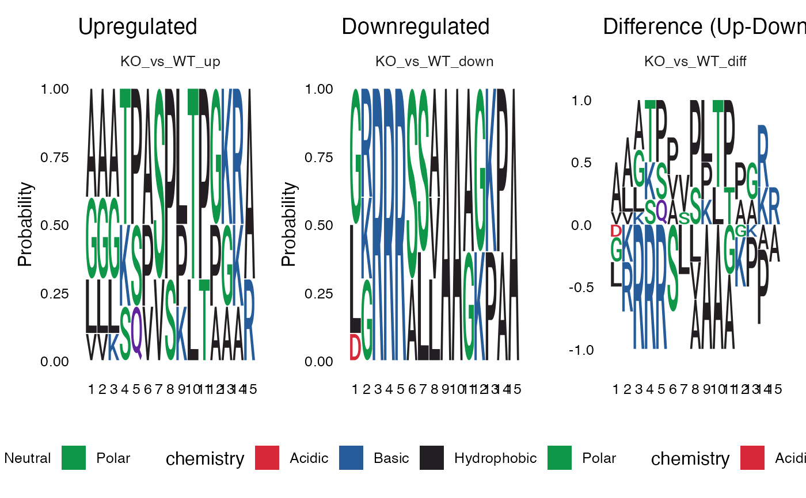

Creates a 3-column sequence logo plot showing upregulated sites, downregulated sites, and their difference (Up - Down) for each contrast. The difference column uses an independent y-axis scale appropriate for showing positive and negative frequency differences.
Value
A patchwork object combining sequence logos with 3 columns per
contrast row: upregulated, downregulated, and difference logos.
Returns NULL if no contrasts have both upregulated and
downregulated sequences.
Details
For each contrast, three sequence logos are displayed:
Upregulated: Amino acid frequencies at sites with increased phosphorylation (y-axis: 0-1)
Downregulated: Amino acid frequencies at sites with decreased phosphorylation (y-axis: 0-1)
Difference: The difference in frequencies (Up - Down), where positive values indicate enrichment in upregulated sites (y-axis: symmetric around 0)
See also
plot_diff_logo for difference logos only
Examples
# Create example data with phosphorylation site motifs
sig_sites <- data.frame(
contrast = rep("KO_vs_WT", 20),
regulation = rep(c("upregulated", "downregulated"), each = 10),
SequenceWindow = c(
# Upregulated: Proline-directed (CDK-like: S/T-P-x-K)
"AAATPASPLTPGKRA", "GGGKSPVSPLTPGKR", "AAATPASPLTPGKRA",
"LLLSQVSPKTPAAAA", "AAATPASPLTPGKRA", "GGGKSPVSPLTPGKR",
"VVKTPASPLTPGKRA", "AAATPASPLTPGKRA", "LLLSQVSPKTPAAAA",
"GGGKSPVSPLTPGKR",
# Downregulated: Basophilic (PKA-like: R-R-x-S)
"LRRRRSLAAAGKPAA", "GGRRRASVAAAGKPA", "LRRRRSLAAAGKPAA",
"GKRRRSSLAAAGKPA", "LRRRRSLAAAGKPAA", "GGRRRASVAAAGKPA",
"DKRRRSSLAAAGKPA", "LRRRRSLAAAGKPAA", "GKRRRSSLAAAGKPA",
"GGRRRASVAAAGKPA"
)
)
# Generate 3-column layout: Up, Down, Difference
p <- plot_seqlogo_with_diff(sig_sites)
print(p)
